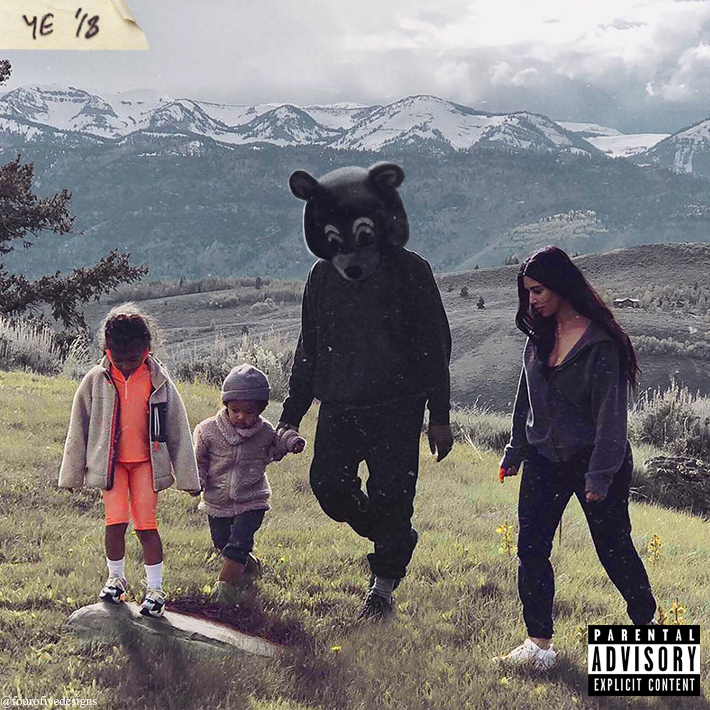
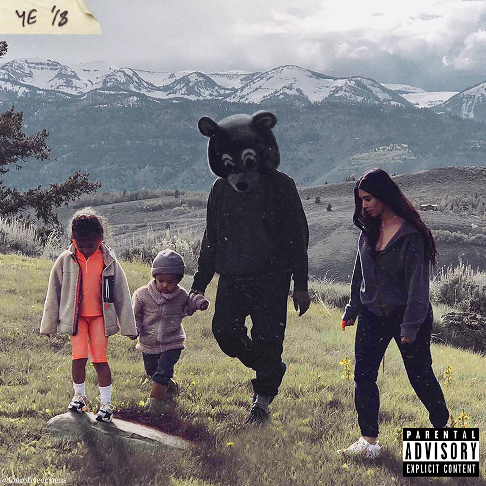

Kanye's phase 3 is his current arc music wise. Phase 3 is when he begins his transition into a more bombastic, confident, and arrogant person to a more responsible and caring adult. This begins with Yeezus, a complete corruption of what people believe Kanye to be. The album is dark, the sounds are heavy and loud, and this album takes the electronic beats up a hundred notches. Yeezus is his most experimental album, and it shows through his collaboration with Daft Punk, Hudson Mohawke, and Travis Scott. The album debuted number one on the Billboard 200.


The Life of Pablo is when Kanye truly begins to show his transition. Released in 2016, in the album Kanye returns to soulful beats, even producing some straight up gospel music with the song "Ultralight Beam". The album was heavily leaked and pirated, causing Kanye to go back and change the album while it was already out to the public. The album debuted number one on the Billboard 200, becoming his 7th album in a row to hit number one. However, this time, it was done through streaming rather than through physical copies.
Ye is the final part of phase 3 as of now. The album sees Kanye taking a seat for a while as he deals with his family now. Kanye sees that life isn't all about fame, fortune, and women. It's about caring for the women in your life, your family. Ye was released in 2018, and at this time Kanye had four kids and was happily married. In the album he discusses how he is loyal to his family, and how his family is to him. His wife, Kim, stayed with him when he went bankrupt, and she remained with him all these years. Kanye also speaks of mental problems, and how he struggles with them, especially as an artist who tends to have a hard time getting that across to his fans. All in all, the album rounds up Kanye's life as of now.
 
